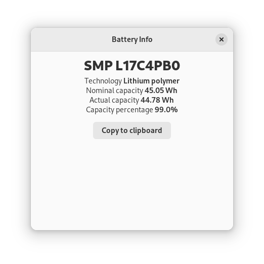
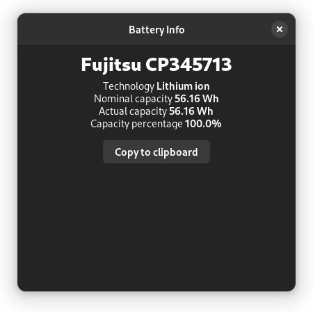

Battery Info
Battery Info is a desktop application to display health information about the notebook battery.
Screenshots
 Description
Application displays current battery health as well as some general information about the battery.- Vendor and Model Battery vendor and model number. This information can be used to source the battery replacement.
- Technology Battery chemistry. Lithium ion is the common proven technology. Lithium polymer allows for thiner batteries.
- Nominal capacity Energy amount the battery can hold by design.
- Actual capacity Actual energy amount the battery can hold as measured by the operating system. To get the most accurate value, fully charge and fully discharge the battery.
- Capacity percentage The ratio between the actual and nominal capacity. Typical values are 90-100% for batteries in good shape. For values below 75% it is recommended to replace the battery.
Build and Install
First install the requirements.
Checkout the source code from github.
$ git clone https://github.com/her01n/battery-info
You can now run the application locally or install it.
$ ./battery-info
$ sudo make install
For unit testing, first install hdt test library.
Then run hdt or alternatively make in the source directory.
This is a guile program using g-golf library to access Gio, Gtk and Adwaita libraries. Information is collected using UPower DBus interface, with the gdbus client from Gio library. User interface is displayed using Adwaita and Gtk libraries.